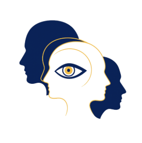

Publications
Writing and publishing scientific and philosophical works.

Our vision
Noes is a scientific and philosophical initiative that aims to close the gap between academic research and society.
Writing and publishing scientific and philosophical works.
Interactive, in-person seminars on science and philosophy for everyone.
A pioneering model of academic mentorship for students and independent researchers.
Specialised advisory services connecting cognitive science with practice.
Online radio: music around the clock, commentary, podcasts and live shows.
femme-radio.gr ↗Build Chinese sentences from character tiles, level by level (HSK).
hanzilink.com ↗Build Greek sentences, with full conjugations, etymology and writing practice.
Play ↗Ancient Greek from the texts themselves: Homer, Plato, Aristotle, tragedy and more.
Play ↗